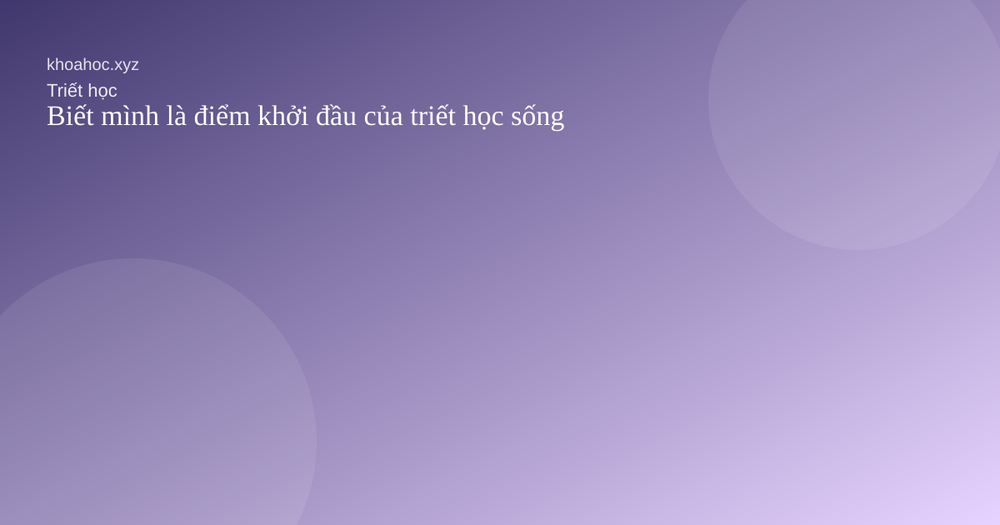
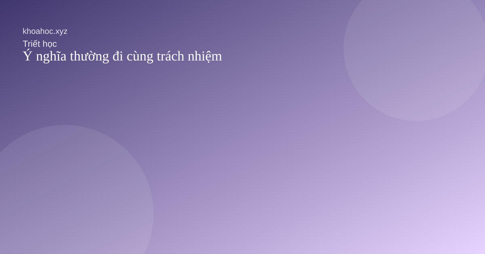

Biết mình là điểm khởi đầu của triết học sống

Trước khi hỏi nên làm gì, có lẽ ta cần hiểu mình đang sống theo điều gì.

Trước khi hỏi nên làm gì, có lẽ ta cần hiểu mình đang sống theo điều gì.

Bình thản không đến từ việc tránh khó khăn mà từ cách ta đáp lại hoàn cảnh.
Có những lúc tiến bộ đến từ sự đúng nhịp hơn là từ cố sức hơn.
Giảm bớt sở hữu không tự động đem lại tự do nhưng mở ra khả năng lựa chọn sáng suốt hơn.

Điều làm đời sống sâu sắc hơn cũng thường đòi hỏi ta trưởng thành hơn.